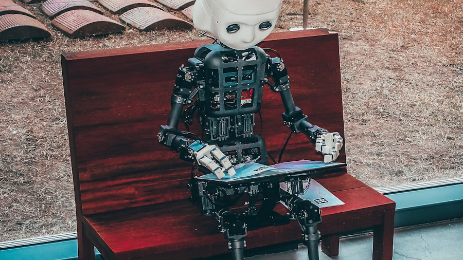

KI & Tech 2026: Was jetzt wirklich passiert
Der Markt hat sich konsolidiert. Anthropic, OpenAI, Google und Meta liefern Foundation Models, auf denen Tausende Anwendungen aufbauen. Wer heute KI als Werkzeug nutzt, hat einen Produktivitätsvorteil…
Von ChatGPT zur KI-Infrastruktur

Der Markt hat sich konsolidiert. Anthropic, OpenAI, Google und Meta liefern Foundation Models, auf denen Tausende Anwendungen aufbauen. Wer heute KI als Werkzeug nutzt, hat einen Produktivitätsvorteil. Wer KI in seine Systeme integriert, hat einen strukturellen Vorteil.
Was Unternehmen jetzt tun sollten
Nicht 'Was kann KI?' – sondern 'Welche unserer Prozesse kosten am meisten Zeit mit dem geringsten Wert?' Das ist die richtige Frage. Content-Erstellung, Kundenservice, Datenanalyse und interne Dokumentation sind die vier Bereiche mit dem besten ROI bei KI-Integration.
KI für Einzelpersonen: Der Hebel ist riesig
Ein Solopreneur mit KI-Tools kann heute die Kapazität eines kleinen Teams erreichen. Content-Pipelines, automatisiertes Outreach, Marktrecherche, Code-Generierung – alles machbar ohne Programmierkenntnisse.
KI gibt dir nicht mehr Ideen. Sie gibt dir mehr Zeit für die richtigen.
Automatisiere dein Business
Erfahre, wie CanGo Empire Unternehmen beim Aufbau von KI-gestützten Systemen unterstützt.
Kostenlose Beratung